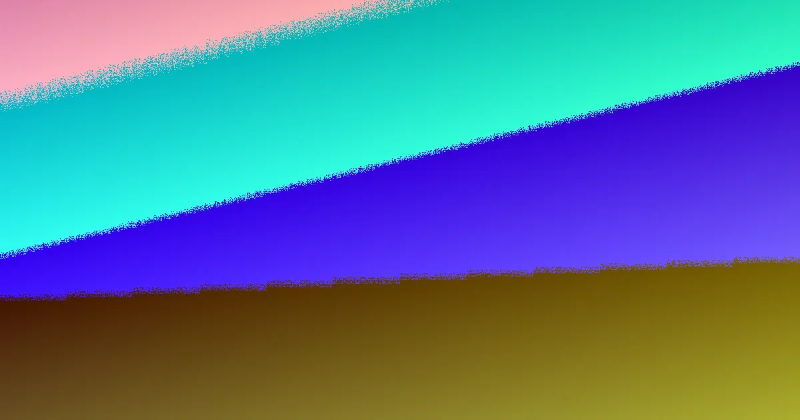

The most costly retaining wall mistakes in Perth begin before any quote: judging a wall by its visible face instead of the height it retains, and treating drainage as optional. A building permit is generally needed once a wall retains more than 0.5 metres of ground, engineered design is referenced to AS 4678, and Wanneroo and Melville may count tiered walls together. Limestone block and post and panel suit different sites, so comparing face material alone hides footing, backfill and ag-drain differences that decide durability and price.
For local buyers, retaining wall builders perth common mistakes a practical look at the planning errors that inflate cost and shorten wall life.
Retaining Wall Builders Perth Common Mistakes Explained
Many retaining wall problems trace back to measurement. A wall that looks low from the lawn can retain far more than half a metre once the slope above and below is considered, and that retained height is the figure that matters for permit thinking, not the tidy face visible from the street. Homeowners weighing retaining wall builders perth options often begin with finish and colour, when the structural questions are height, location, soil and drainage. The better sequence is to map the site first.
- Measure the retained height, not the visible face alone.
- Photograph the full slope, boundaries and access before pricing.
- Note any wall sitting above another wall, since combined height can change the permit path.
- Record cracking, leaning or bulging before repair quotes.
A homeowner who arrives with height, length, boundary position and access mapped makes scope easier to price and harder to inflate.
Permit and engineering mistakes
The permit trigger catches people out. A building permit from local government is generally needed once a wall retains more than 0.5 metres of ground. A wall of any height can still need a permit where it is tied to other building work, affects or protects adjoining land, or involves a boundary wall or dividing fence. Tiered walls deserve care: Wanneroo and Melville are named as councils that may count the combined height of tiered walls toward the 0.5 metre figure, so two low-looking terraces can behave like one taller wall for approval.
For engineered work the referenced standard is AS 4678, with design handled by WA-registered building engineering practitioners. The homeowner does not need to solve the design, yet the quote should state plainly whether engineering drawings, permit lodgement and local government submission are included or excluded. A cheap quote that quietly excludes engineering often becomes an expensive one later.
- Does the quote assume permit work, engineering, or both?
- Who signs the structural design?
- Are boundary and adjoining-land effects assessed before pricing?
Material mistakes that raise costs
Swapping materials is the classic error. Limestone block suits many sandy Swan Coastal Plain blocks and can sit naturally in the streetscape, but natural and reconstituted limestone are different products; ask which is quoted, what footing detail is assumed, and whether the block size fits the retained height. Post and panel uses posts with precast panels slotted between them and gives a fast, consistent finish often seen on driveways and boundaries across the Perth metro area. Besser block is described for taller engineered structural walls and rendered finishes, timber sleepers for garden-scale retaining, and rock or boulder walls for Perth hills blocks with granite outcrop.
These are not interchangeable. Height, surcharge and drainage decide which system fits, so a quote that jumps straight to appearance skips the questions that decide durability. Drainage is the detail most often under-scoped: ag-drain, gravel and geofabric belong behind every wall, and that detail helps prevent failures in winter-saturated sandy ground. Two quotes can look similar while allowing very different backfill and drainage work, so the drainage method belongs in plain writing, including excavation depth, outlet location and whether failed drainage behind an old wall must be removed.
Quote comparison mistakes
The central quote mistake is comparing face material only. Face price is the visible slice; the hidden slices are excavation, backfill, drainage, footings, engineering and permit submission. Ask for the drainage method in plain writing, and separate wall face material from drainage and footing detail so each quote covers the same scope.
For a repair, assessment starts with failure mode, footing condition, drainage and material state. A leaning timber sleeper section is a different repair from a bulging block wall that needs partial demolition and rebuild. Good scoping separates patchable defects from walls where the underlying cause must be corrected. Any quote that cannot state retained height, drainage detail and permit assumptions is not yet comparable.
Who this applies to
This angle is most useful for owners planning a new retaining wall, replacing a failing wall, or puzzled by why one quote includes engineering while another does not. It matters where a boundary, driveway, tiered level change or adjoining land makes the approval path less obvious. It is less useful for purely decorative garden edging that retains little ground, although the same questions about drainage and material life still help. For a broader introductory comparison of local site decisions, see the framing offered under retaining wall builders in Perth.
- Map and measure. Record retained height, length, boundary position, slope, access and any cracking or leaning before pricing.
- Check permit triggers. Test for the 0.5 metre threshold, ties to other building work, adjoining-land effects and tiered wall counting.
- Confirm drainage. Ask for ag-drain, gravel and geofabric detail in plain writing, including outlet location.
- Clarify engineering. Confirm whether AS 4678 design, drawings and local government submission are included or excluded.
- Compare like scope. Line up retained height, drainage, footings, engineering and permit assumptions across every quote.
| Mistake | Why it costs | Better first step |
|---|---|---|
| Judging the visible face only | Retained height can exceed 0.5 m and trigger a permit | Measure retained height along the slope |
| Ignoring tiered wall height | Combined height may count toward the 0.5 m figure | Confirm the council position early |
| Treating materials as interchangeable | Height, surcharge and drainage decide fit | Match system to site conditions |
| Skipping drainage detail | Under-scoped backfill drives failure and variation | Specify ag-drain, gravel and geofabric in writing |
| Comparing face price alone | Hidden scope differs between similar quotes | Compare like scope, including engineering and permits |
Common questions
Does a retaining wall over 0.5 m always need a building permit in Perth? A permit is generally needed once a wall retains more than 0.5 metres of ground, and a wall of any height can need one if tied to other building work, affecting or protecting adjoining land, or touching a boundary wall or dividing fence. Councils differ, and Wanneroo and Melville may count tiered walls together, so confirm the local position before work starts.
Is drainage really a structural detail? Yes. Ag-drain, gravel and geofabric behind every wall are treated as the detail that helps prevent failures in winter-saturated sandy ground, which is why drainage changes both scope and price and belongs in writing.
Can quotes be compared on face material alone? No. Two similar quotes can allow very different backfill and drainage work, so compare retained height, drainage method, footings, engineering and permit assumptions as well.
General information for Perth homeowners planning, repairing or comparing retaining wall work; not legal, engineering or financial advice.